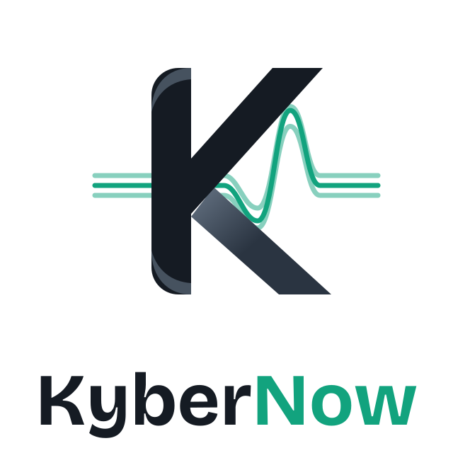

<!doctype html><meta charset="utf-8"><title>KyberNow — logo</title>
<style>body{margin:0;font-family:system-ui;background:#0D1117;color:#9AA7B8;display:grid;grid-template-columns:repeat(3,1fr);gap:24px;padding:24px}
figure{margin:0;display:flex;flex-direction:column;gap:8px}img{width:100%;height:260px;object-fit:contain;border-radius:12px;background:#0D1117;border:1px solid #1F2733}
.light img{background:#fff}</style>
<figure><figcaption>Logo vertical</figcaption></figure>
<figure><figcaption>Symbole</figcaption></figure>
<figure><figcaption>Icône</figcaption></figure>
<figure style="grid-column:span 2"><figcaption>Horizontal</figcaption></figure>
<figure><figcaption>Animé</figcaption></figure>
<figure class="light"><figcaption>Vertical clair</figcaption></figure>
<figure class="light" style="grid-column:span 2"><figcaption>Horizontal clair</figcaption></figure>
